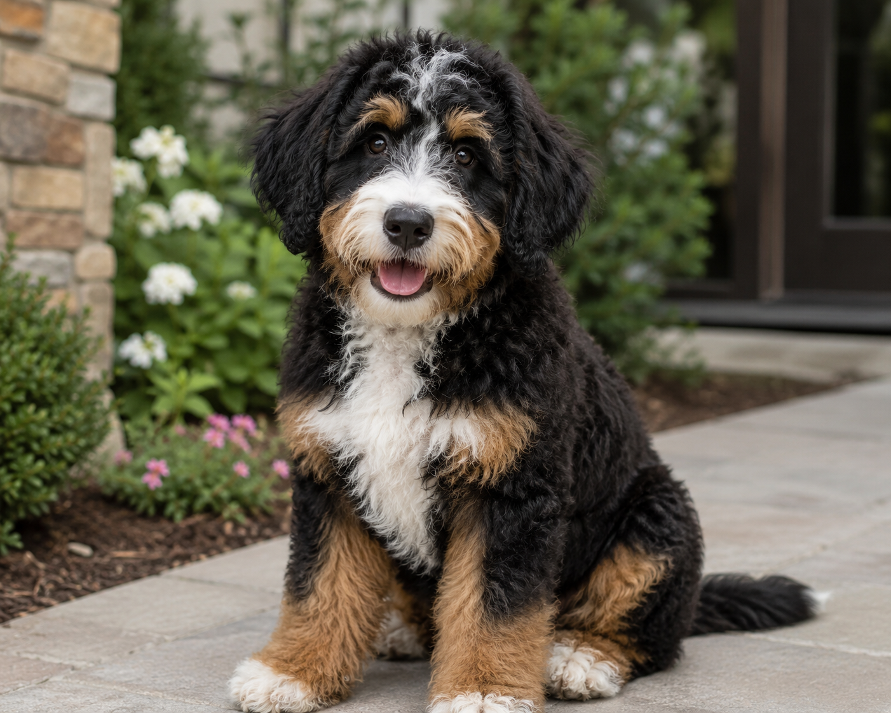

Photographed on a spring morningA spirited cross between the loyal Bernese Mountain Dog and the brilliantly intelligent Poodle, the Bernedoodle is one of the most sought-after designer breeds in the world. Equal parts playful and gentle, they bring warmth to every home they enter.
Inheriting the Poodle's curly, low-shedding coat, Bernedoodles are an excellent choice for families with allergies — minimal shedding, maximum cuddles.
Both parent breeds rank among the smartest dogs on earth. Bernedoodles excel at training and love learning new tricks — they thrive on mental stimulation.
Known for their velcro-dog nature, Bernedoodles form profound bonds with their families. They are loyal, empathetic, and endlessly devoted companions.
Bernedoodles strike a beautiful balance between the easygoing, sociable Bernese and the lively, eager-to-please Poodle. They tend to be silly and playful as puppies, mellowing into calm, steadfast companions in adulthood. They get along wonderfully with children and other pets.
Early socialization and consistent positive training bring out the very best in these dogs — they are sensitive souls who respond far better to encouragement than correction.
"They carry the heart of a Bernese and the mind of a Poodle — a combination that is, simply, magic."Bernedoodle Owners Association